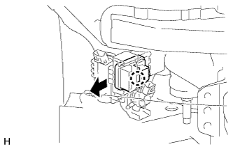

РЕЛЕ (для моделей с системой очистителей фар) > СНЯТИЕ |
| 1. СНИМИТЕ РЕШЕТКУ РАДИАТОРА |
Снимите решетку радиатора (Нажмите здесь).
| 2. СНИМИТЕ НАКЛАДКУ ПЕРЕДНЕГО БАМПЕРА |
Наклейте защитную ленту вокруг накладки переднего бампера.
Выверните 2 болта A и 2 болта B.
Выверните 6 винтов и освободите 6 фиксаторов.

| *1 | Защитная клейкая лента | *2 | Болт A |
| *3 | Болт B | - | - |
Освободите 12 захватов.
Для моделей с сенсорной системой помощи при парковке TOYOTA и противотуманными фарами:
Отсоедините 3 разъема.
Для моделей с сенсорной системой помощи при парковке TOYOTA без противотуманных фар:
Отсоедините разъем.
Для моделей без сенсорной системы помощи при парковке TOYOTA и с противотуманными фарами:
Отсоедините 2 разъема.
Для моделей с системой очистителей фар:
Отсоедините шланг очистителя фар.
Снимите облицовку переднего бампера.

| *1 | Защитная клейкая лента | - | - |
| 3. СНИМИТЕ РЕЛЕ УПРАВЛЕНИЯ ОЧИСТИТЕЛЕМ ФАР |
|  |
Отсоедините разъем.
Снимите реле управления очистителем передних фар